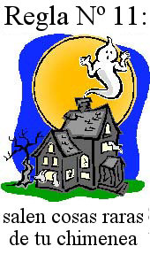
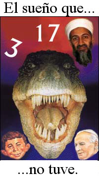

Luces anaranjadas en la noche

La lectora M. Alice LeGrow ofrece esta historia espeluznante:
Pensé que usted podría encontrar divertida esta anécdota…
He estado fuera de mi horario normal de dormir por semanas, intentando procesar rapidamente los capítulos que mi editor necesita lo antes posible, y así que he ido a la cama a las horas más inusuales. Me sorprendí mucho al notar que aproximadamente a las 4:15 de cada mañana, una luz anaranjada penetrante llenaba mi ventana que está al nivel del suelo, y hacía un centelleo-centelleo-centelleo-RELÁMPAGO repetidamente, y luego desaparecía de improviso.
Primero pensé que era un coche de la policía, pero vivo en un área rural donde la actividad de la policía es inusual, y el anaranjado no es un color de las lueces de la policía de todos modos. La luz siempre me asustaba, pero para el momento en que me armaba del valor de salir de la cama y de mirar fuera de la ventana, no había nada allí excepto la habitual oscuridad.
Escribí este acontecimiento en mi diario en línea para poner a mis amigos a deliberar, junto con la singularidad de que mi reloj de escritorio que se atrasara en varias ocasiones quince minutos cada día. Por supuesto, usted sabe qué sucedió después. Todos comenzaron a gritar “¡EXTRATERRESTRES!” y me dijeron que no durmiera a esa hora de la noche. Tuve varios entretenidos consejitos de “abducidos” y de otros chiflados, diciéndome que fuí Elegida y que los extraterrestres me advertían de que habría un momento en que sería llevada por ellos.
Hace un año, puede ser que casi lo hubiera creído, pero pensé que por lo menos yo tenía un poco más de sentido que eso ahora. Así que la otra noche, esperé en mi zaguán con una linterna para ver si podría avistar las luces anaranjadas otra vez.
Siento informar que no aterrizó ningún OVNI. No apareció ningún terrorífico hombre verde apareció para raptarme a quién sabe dónde e implantarme recuerdos para que después los encuentre John Mack. Ninguna nave plateada, descendiendo alegremente, perforó hoyos en mi jardín delantero. La luz de seguridad anaranjada pertenecía a la camioneta del correo que entregaba el periódico temprano en la mañana.
En serio, siempre es gratificante oír hablar esta clase de epifanía. Gracias, Alice. Es más fácil ahora para usted entender cómo alguna gente experimenta algo que la lanza en una tangente paranormal de la cual nunca se recupera porque la verdad sobre ella nunca se les revela. Ésta es una de las fuentes principales de toda clase de historias sobre “ETs” y “fantasmas” que por supuesto luego son tomadas por los medios, amplificadas y transformadas hasta volverlas irreconocibles. Cuando pedí el permiso de Alice de utilizar esta anecdota en la página, ella respondió amablemente:
Seguro, sería un honor. Y otros quizá aprenderán a no temer a la camioneta del correo como me pasó a mí.
¡Es de las chicas que me gustan!
El topo y Malcolm
Los lectores recordarán el nombre Malcolm Roe (en http://www.randi.org/jr/090602.html) que, después de ser clausurado por el FBI aquí en los E.E.U.U., se mudó al Reino Unido y cambió el nombre de su dispositivo “localizador” falso de “Quadro” a “El Topo”. El Quadro era una vara de zahorí de supuesta tecnología de punta que tenía pegados con epoxi componentes electrónicos que no tenían ninguna función, y se podría “sintonizar” al “ADN de las balas”, entre otras afirmaciones fatuas. Parece que Roe invirtió el dinero que hizo con la venta de este engaño al Cuerpo Real Britanico de Ingenieros (U.K. Royal Corps of Engineers, RCE), en un club nocturno: El Club y Spa en Glynneath, en Gales del Sur. El Topo fue vendido al RCE por £13.000 (U$S24.000) cada uno, y adivinen qué, ¡no funcionó! Ofrecí el premio de millón de dólares de la JREF a cualquier miembro del RCE, sabiendo que habían recibido capacitación para utilizarlo, pero me ignoraron. Me pregunto por qué…
El Club Glynneath ofreció un espectáculo, y un artista que había actuado allí me contactó:
Mi nombre es Ray Ronson y soy un Hipnotista de escenario. Me programaron para realizar mi acto la noche de la abertura en el Club y Spa de Glyn Neath (propiedad de Malcolm Roe) a principios de 2002. Además de obtener mis honorarios por la presentación, a mi esposa y a mi nos ofrecieron la membresía gratis para probar las delicias del nuevo lugar. Habiendolo visitado varias veces, llegamos a conocer a Malcolm y con el tiempo el pequeño “adminículo” que afirmaba haber inventado. También mencionó que él había dado una demostración a la fuerza local de policía de Glyn Neath. La demostración implicó el localizar los edificios en los cuales los traficantes locales de drogas ocultaban su “tesoro”. Malcolm afirmó que la demostración ocurrió sobre una colina local y que fue exitosa. Si la policía allanó realmente los edificios, sigue sin saberse.
Más tarde Malcolm realmente me demostró “El Topo”, me dió una demostración, la cual se trataba de localizar un objeto oculto en su coche, y me dijo que si su coche le fuera robado él siempre podría localizarlo. Entonces me enseñó cómo utilizar “El Topo”. Me dijo que lo sostuviera por la manija plástica moldeada, con mi brazo recto y flexionado en el codo con mi antebrazo puesto derecho hacia abajo y metido un poco en mi cadera, y pude localizar el objeto oculto en su coche. El indicador me condujo al objeto.
Cuando llegué a casa hice algunos experimentos y descubrí que podría conseguir los mismos resultados usando un pedazo de alambre insertado en el estuche de un bolígrafo, y también al usar “El Topo” de Malcolm. Sabía donde estaba el objeto de todas formas, en el coche de Malcolm, y por lo que ahora sé, “El Topo” parece ser solo una vara de rabdomancia glorificada que hasta un niño puede hacer.
Acabo de recordar, en una de nuestras conversaciones con Malcolm, estando presente varias personas, ¡él dijo que conocía a un científico en Irlanda que había viajado con éxito hacia atrás en el tiempo y tomado fotografías de la boda de sus padres! También, Malcolm era firme creyente de que la gravedad no existía.
No hace falta decir que nada de esto me sorprende ni un poquito. La gente que está implicada en estas farsas por lo general creen en todo. El Ratón Pérez, El conejito de Pascua, leprechauns, elfos, duendes, todos deben su existencia a las nociones infantiles que esta gente alimenta. ¡Caramba, me gustaría probar la convicción de Malcolm sobre la gravedad! Sólo muéstrenme el acantilado más cercano…
Sugiero a Ray Ronson que donde él escribe, “El indicador me condujo al objeto” él debería haber escrito mejor, “Apunté la barra hacia el lugar en donde sabía que el objeto se localizaba”. Ésta es la reacción ideomotriz en funcionamiento, el movimiento subconsciente de un dispositivo mal estabilizado. Vea http://www.randi.org/library/dowsing/
La próxima semana, verán aquí otro artículo sobre nociones de rabdomancia, demostrando que los genuinos creyentes en esta falacia no sólo dedicarán sus vidas a seguir la quimera, y rechazarán hacer pruebas doblemente ciegas en caso de que destruya su falsa ilusión, sino que alegremente suplicarán en el proceso…
La astrología paga bien
¿Recuerdan al astrólogo Jonathan Cainer que mencioné dos meses atrás? (original en http://www.randi.org/jr/022004demons.html). Por si le preocupara que él estuviera sumido en la pobreza, pensé proporcionarles información acerca de su renta actual. Ha estado yendo y viniendo entre varios periódicos británicos que han competido por sus increíbles talentos. En 1998, recibía solamente £75,000 (u$s140.000) al año, más el 50% de las ganancias del servicio de astrología “hotline” en papel, para despertar el interés de los lectores del Daily Mail. Esta “bonificación” ascendió a £100,000 (u$s 185.000) adicionales, pero Jonathan aparentemente aún se sentía estafado. Renunció al Mail y se incorporó al Express, donde le dieron el 75% de sus ingresos por las “hotline”. Solamente podemos imaginar su renta, en ese punto. Después, el London Mirror lo cortejó con aún más dinero, pero demasiado tarde para detenerlo de volverse de un salto al Daily Mail, por millón de frescas libras (u$s 1.850.000) al año.
La gente siempre me pregunta si he pensado siempre que quizá estaba en el lado incorrecto de este negocio. He pensado en ello…
Sedna discutido en profundidad
Échenle una ojeada a http://forums.fark.com/cgi/fark/comments.pl?IDLink=877081 para una discusión muy entretenida.
Demócratas en apuros

La “psíquica” Sylvia Browne ofreció el año pasado un batiburrillo de sus frívolas predicciones, entre las cuales estaba su pronóstico de la muerte de Saddam Hussein para fin de ese año, que se elegiría “un presidente demócrata” en el 2004 (sin nombre, posiblemente porque Kerry en ese momento no había aveentajado a la manada de aspirantes) y la “posible erupción de un volcán en el parque Yellowstone” antes del 22 de febrero de este año. “Creo que todo va a reventar” dijo ella, agudamente. Bien, no fue así, Saddam todavía está vivo, y a Sylvia le falta sólo una adivinación fallida para conseguir un puntaje negativo perfecto: la elección de John Kerry a la Casa Blanca. Basado en su lamentable índice de fallos a través de los años hasta ahora con sus profecías (dijo que en el 2000 los demócratas ganarían la elección con Bill Bradley, seguido muy de cerca por el Partido Reformista), creo que los demócratas deben abandonar toda esperanza de inmediato…
Rodeado de ingenuidad
El lector Andrew Schaur comenta:
No debe ser sorprendente para usted, pero siempre me sorprende cómo incluso un rumor informativo puede ser la base de un “hecho” en las mentes de algunas personas. Dos ejemplos de mi vida me vienen a la mente.
Hace alrededor de un año tenía una conversación con un individuo quien repentinamente proclamó: “¿Oyó que la oficina de patentes acaba de aprobar una patente para un dispositivo que le deja hablar con los muertos?”. Realmente estaba excitado con este dispositivo. Conteniendo la retahíla de insultos que crecía en mi cabeza, informalmente le pregunté dónde oyó eso. Naturalmente, él no podía recordar, pero creía que había sido en las noticias. Todo lo que podría hacer era decirle que 1) debería averiguar más sobre eso, porque él aprendería que 2) era una tonta invención absurda, y que 3) mi conversación con él había terminado. Él no me dejaba excusarme, e insistió con vehemencia en que este dispositivo era real. Como remate desconcertante, me explicó rápidamente qué era lo que encontraba tan fascinante: “¿Puede usted imaginarse lo que le va a hacer esto a la Iglesia Católica?”.
Recientemente, entraba a mi oficina en el medio de una conversación entre varios de mis compañeros de trabajo. De hecho, la primera cosa que oí era a una mujer diciendo: “Ya sabe, el cromosoma del varón Y es más débil que el X, y en 125.000 años no habrá más hombres”. Escuché mientras varias personas lanzaban en la habitación una ráfaga de conceptos seriamente mal informados sobre la evolución, pero para mi sorpresa, nadie discrepaba. ¡La maltrecha teoría de una persona era prueba suficiente para todos los que estaban en el cuarto! Por supuesto, me hice notar y dije que no era verdad. (Técnicamente, NO SABÍA que no era cierto, pero gracias a Stephen Jay Gould, sé que no se pueden predecir las vueltas y los giros imprevistos de los cambios de la vida). Su respuesta a mi incredulidad: “Es verdad, ahora hay un libro acerca de eso”. Ella no había leído el libro. No conocía al autor. No sabía el nombre del libro.
Para la mayoría de la gente (los no escépticos, al menos) el escepticismo significa de alguna manera pesimismo. Pero en verdad, el escepticismo comienza con saber apenas lo que usted sabe, y más importante, saber cuándo uno no sabe. Lo que para la mentes de mucha gente es la verdad, causa consternación, y deseo agradecerle a usted no solamente por su búsqueda incansable de fraudes y curanderos, sino también para darme la comprensión de estos mitos urbanos y teorías falsas que circulan por mi vida diaria.

Un sitio nuevo y provocativo
Recomiendo que se mire en : www.churchofcriticalthinking.com
John Stossel está en ello de nuevo
El anfitrión de radio Paul Harris, un buen amigo, escribe para decirme (utilizado con permiso):
Pensé que querrías saber que el archivo de audio de nuestra reciente conversación en mi programa de radio ha sido el archivo que más fué accedido en mi sitio web este mes (¡bastante más de mil usuarios distintos lo han escuchado!). Probablemente habrá más visitantes después de los comentarios que acabo de agregar sobre el especia de John Stossel la noche pasada. Sin duda estás familiarizado con ello, pero esto es lo que tuve que decir hoy, directo de la página principal de HarrisOnline.com:
Martes, 23 de Marzo.
Felicitaciones a John Stossel por la edición especial de ayer por la noche la “Mitos, mentiras, y estupidez lisa y llana” del programa “20/20”. Entre otros asuntos, abordó la mentira de que los médiums han ayudado a la policía a solucionar crímenes y a encontrar a desaparecidos. De hecho, nunca ha habido un caso verificado de que esto haya ocurrido, no importa qué diga Sylvia Browne. Stossel expuso cómo Browne y otros, puramente para su propio beneficio, explotan las emociones de los miembros de las familias en los peores momentos de sus vidas.
Lo peor fue una mujer llamada Kathlyn Rhea, que se hace llamar consejera intuitiva. Rhea tiene la risa mas malvada que he oído emitir a un ser humano. Refunfuñó cuando Stossel la interrogó sin cuartel sobre la información que ella había dado respecto a la hermana perdida de una mujer. Rhea le dio un mapa a la mujer y le dijo que la hermana estaba dentro de un radio de 50 kilómetros. Ella le dijo que buscara un camino que se bifurca en forma de Y dividiendolo (¡así son todas las salidas de la autopista!), un edificio que se parece a una iglesia del país (¡montones de ellos!), y algo con la letra S (¡wow!, ella realmente limitó la busqueda, ¿no?). Stossel le dijo: “Intentamos seguir sus instrucciones: Pero había montones de Ys en el camino y de signos con una S”. Cuando Stossel la enfrentó con las vaguedades de su información, ella le respondió bruscamente (aquí estoy parafraseando): “Bueno, ellos tienen que hacer la parte que les toca. No pretenderá que lo haga yo, ¿no?” ¡No, usted se queda con los u$s 1.800 de honorarios por su inútil información, y sientase bien con usted misma, listilla!
Ella estuvo implicada en la búsqueda de Polly Klaas pero, aunque su consejo fue totalmente inútil, ella ha afirmado ser la que ayudó en el hallazgo de Polly y su asesino. Eso es deplorable.
Repetiré mi súplica para las fuerzas del orden de todo el país de comenzar a perseguir a la gente que hace estas afirmaciones fraudulentas, haciendole perder su valioso tiempo a la gente, y ganando de él financieramente. ¿No es la misma definición de un artista del timo?
Algunos detalles del programa de la ABC de ayer por la noche están aquí , junto con enlaces a otros mitos menos dañinos, por ejemplo “¿debe usted nadar justo después de comer?”. También puede querer escuchar mi reciente conversación con James Randi , quien aparece y llama a Sylvia Browne una mentirosa y la desafía otra vez a probar que ella tiene las capacidades paranormales que tanto afirma tener. Ella no lo hará, por supuesto, porque ése sería el final de su negocio.
Y, ¿saben?, Paul Harris todavía no ha oído de George Noory sobre una petición de retractación de las mentiras que Sylvia Browne dio en su programa, “De costa a costa” (Coast to Coast) aunque ahora Noory ha recibido copias de mis datos aclaratorios, así que él ya sabe los hechos reales. George, que conoce a Paul muy bien, incluso estuvo al aire la semana pasada y repitió la patraña absoluta de que Sylvia Browne habló de mi negativa a poner el dinero del premio de la JREF en depósito. Puede haber una razón para el grado especial de desorden de Noory en esta ocasión. Él entrevistó a Uri Geller, el doblador de cucharas, así que quizá estaba en pose de estrella y más despistado de lo usual. Hago notar que cuando Noory mencionó mi nombre en la entrevista, Geller declinó muy sabiamente discutir el tema. ¡Es un sobreviviente!
Error primo 1
El lector Richard P. Johnson, quién se describe como “un astrónomo aficionado y supervisor de un observatorio público,” me envió una larga crítica del aspirante al premio de la JREF de la semana pasada que deliraba sobre Sedna. Y me corrigió, al igual que varios otros. Había escrito que el 2.380.981 era un número primo. Espero que no muchos de ustedes hayan intentado también encontrar factores de él, de lo contrario podrían haber descubierto que 79 x 30.139 = 2.380.981. Richard está absolutamente en lo correcto sobre ese número que no es primo, aunque ambos factores son primos… Mea culpa. Puede ser que haya sido el 2.380.481 el que me engañó, o aún el 2.380.951: ambos son primos, y bastante cercanos…
Sí, ya sé. “Cercano” no cuenta…
¿Dónde estaría sin los lectores astutos y observadores?
Explicaciones alternativas
El lector Matthew Gates tiene su propio conjunto de causas posibles para las anomalías precisadas por el astrólogo Russell Grant como prueba de que usted está embrujado, los diez puntos que fueron señalados aquí la semana pasada:
-
Usted oye ruidos inexplicados y extraños.
Causa: usted tiene vecinos.
-
Las luces se apagan y encienden a su antojo.
Causa: usted mismo hizo el tendido eléctrico.
-
Usted siente o ve los muebles sacudirse.
Causa: Éste es bastante interesante. A veces experimento “temblores de autobuses” en el trabajo. La vibración de baja frecuencia parece viajar bastante lejos y produce vibraciones resonantes en objetos cercanos. Justo discutía este efecto con un danés amigo. Él me dijo sobre un amigo o pariente que, al irse de vacaciones, dejó instrucciones para los cuidadores de la casa de que debía mover de vuelta todos los adornos a sus estantes algunos centímetros una vez por semana. Las vibraciones del tráfico causaban que los adornos se movieran hacia el borde de los estantes algunos milímetros por día.
-
Los artículos cambian inexplicablemente de lugar.
Causa: ¡usted tiene una novia o un novio!
-
Usted ve a alguien en su hogar que no debería estar allí, probablemente vestido con ropa pasada de moda.
Causa: ¡usted tiene abuelos!
-
Usted siente regularmente sensación de agotamiento o se siente “pesado” en su hogar.
Causa: Usted tiene un trabajo de verdad. Astrólogos o rabdomantes podrían no sentir este efecto.
-
Usted siente una presión o una pesantez inexplicada en su espalda o riñón.
Causa: Usted se está acercando o pasando los 30. Quizá mis rodillas están embrujadas.
-
Hay un cambio de temperatura radical en una habitación de la casa.
Causa: usted necesita comprobar el aislamiento de la ventana. Probablemente más trabajo defectuoso hecho por usted mismo.
-
Hay ciertas épocas del día en que “no se siente bien” en su hogar.
Causa: vea el punto número 6, más arriba.
-
Usted se siente muy incómodo en un sitio particular de su casa.
Causa: usted tiene el mismo sofá que nosotros. Oh, parecía una buena idea en la tienda, pero muchas horas de tener la parte posterior entumecida son testimonio de lo contrario.
¡Bien hecho, Matthew! Referente al punto 3, quizás sepan que los elefantes son capaces de comunicarse a largas distancias mediante sonidos a mucha distancia (muchos kilómetros) usando el rango de los 20 hertzios, que es sólo un ruido sordo para los seres humanos, apenas en el límite de nuestra percepción de sonidos de baja frecuencia. ¿Debemos preguntarnos si los autobúses daneses se comunican de la misma manera?
¿Dónde está el metal?
¿Recuerdan esa notable e indigesta diatriba de Michael Horn (el admirador de los OVNIS de Billy Meier) de la semana pasada? Bien, ha estado lanzando mensajes enormes a cualquiera que esté a su alcance (no es que me sorprenda), y ha dejado caer algunos datos que nos muestran sus intenciones en respuesta a mi oferta de pagarle el millón tan pronto como él proporcione evidencia del “metal de otro mundo” que dice que puede aportar. Primero, descubrimos que él realmente “no la tiene”. No dirá quién la tiene, pero no es él. ¡Qué lastima! ¡Y estabamos tan cerca! Ah, pero incluso si él tuviera realmente la evidencia, y la sometieramos a análisis, eso no significaría nada, como advierte a sus compinches:
Asimismo, si se asume que la evidencia pasó todas las pruebas, entonces [los escépticos] aumentarían sus exigencias y dirían que las pruebas deben hacerse de nuevo, o eran sospechosas por alguna otra razón o…, bien, creo que ya entienden el problema.
Sí, vemos tu problema, Michael; está clarísimo. Es que no tienes la evidencia que afirmas con tanta vehemencia tener, y no de ocuparás de ello directamente. No puedo hablar por los otros escépticos, pero como bien sabes, siempre me comprometo con firmeza y por adelantado a no dejar ninguna posibilidad de que pudiera evitar pagar. ¿Qué tan obtuso eres, Horn? ¿Está intentando establecer un nuevo estándar para la torpeza?
Andrew Hunt de Toronto se maravilla sobre algunos aspectos de nuestra historia sobre Horn y Meier:
Billy Meier de seguro es un tipo con suerte, ya que fue como el único contacto humano por los Pleyadenses y todo eso. Obviamente confian mucho en él. Después de todo, lo dejaron tomar fotos de sus naves flotando y en vuelo, y también les dejan hacer bocetos de su apariencia. Supongo que a ellos no les gustan que les tomen fotos. Sino también parecen no gustarles las fotos en primer plano de sus naves, o las fotos del interior de las mismas, o fotos estacionandose en suelo terrestre, o fotos de cómo se ve la tierra desde dentro de sus naves (asumo que Billy ha podido por lo menos ir en un viaje o dos; debe haber alguna ventaja en tener amigos del espacio exterior…). Como sea, estoy seguro que tienen sus razones muy justificables en cuanto a por qué esas fotos no son permitidas.
¡Buenas sugerencias para nuestra consideración, Andrew! ¡Sí, Billy debe ser una cierta clase especial de individuo! El Sr. Horn continúa despotricando febrilmente con toda clase de quejas. Parece que lo tenemos muy preocupado. Pero estoy seguro que se aparecerá con el metal. Ahora mismo, en cualquier momento…
¡Premonición de psíquico falla!
Recibí por lo menos 40 avisos de lectores sobre una historia en los noticieros que en el aeropuerto Fort Myers, de Florida, la semana pasada, el vuelo 1304 de American Airlines fue cancelado a pedido de un “psíquico” que llamó a las autoridades para advertirles que había una bomba a bordo. Una búsqueda con perros entrenados para olfatear explosivos no resultó en nada sospechoso, pero forzó la cancelación del vuelo porque el retrazo hizo que algunos de los miembros de la tripulación excedieran sus horas de trabajo normalmente permitidas para cuando terminó la búsqueda.
Doug Perkins, administrador local de la agencia federal de la administración de la seguridad del transporte, dijo: “En estos tiempos, no podemos ignorar nada. Deseamos tomar las medidas apropiadas”. Estoy de acuerdo. La decisión de cancelar el vuelo fue sensata, desafortunadamente, pero de ninguna manera implica que la TSA tenga creencia alguna en fuerzas o capacidades psíquicas. Esto pudo haber sido una amenaza genuina, no una simple falsa alarma. Sin embargo, los funcionarios de la TSA no dirán de quién vino la llamada. Eso me preocupa. Creo que deberíamos saberlo.
El lector Ben Warden tiene un punto de vista decididamente pesimista del acontecimiento, y ve la acción de la TSA algo diferente de como lo hago yo:
Me sentí extremadamente molesto por el reciente incidente en el que un “psíquico” reportó que había una bomba a bordo de un jet de American Airlines en la Florida, que en última instancia hizo que el vuelo sea cancelado! Por supuesto, no se encontró nada (qué gran sorpresa, ¿eh?) Lo que sucedió fué más perturbador que si se hubiese encontrado una bomba: el hecho de que estos insidiosos y/o engañados charlatanes sean tomados en serio por las autoridades, es un recordatorio que hace pensar en qué poco ha llegado a evolucionar la especie humana en miles de años; de hecho, creo que ha involucionado. Estamos en el año 2004, aún continuamos viviendo en un mundo gobernado por la fantasía, repleto de imaginarias “armas de destrucción masiva”, políticos que consultan a los astrólogos, atletas rogándoles a las deidades por una victoria, facciones que en forma primitiva y uniforme se matan unas a otras en el nombre de “Dios”, y un presidente que cree que simplemente puede barrer con un antiguo fanatismo usando bombas. (Inserte aquí “Qué mundo maravilloso” de Louie Armstrong). Perdí la esperanza en los Homo sapiens hace mucho, pero creía que todavía tenían potencial. El día de hoy, esa presunción ha sido invalidada.
El lector Harry Schmidt, de la universidad de Chicago, tiene una inquietud similar:
Lo que me incomoda es que no se dice que se haya tomado acción alguna contra el “psíquico” que retrasó el avión, incomodando terriblemente a más de cien de personas, y costandole a la línea aérea y al equipo de vuelo mucho tiempo y dinero. ¿Es que nadie va a agarrar al perpetrador de esta broma irresponsable?
Hace unos cuantos años, en mi antigua escuela secundaria, solíamos recibir amenazas ocasionales de bomba que requerían el cierre de la escuela. Los muchachos que lo hacían casi siempre eran aprehendidos y castigados con suspensión o expulsión, inacluso a veces con cargos criminales. ¿Vamos a permitir ahora que cualquier persona logre escaparse con engaños y amenazas si se cubre bajo la capa del supuesto “paranormal”? Se parece a un “beneficio de clerecía” del siglo 21, si me lo pregunta. ¿Qué clase de calamidad van a infligir estas personas antes de que las autoridades den la cara y garanticen que sean castigados por su despreocupación insensible, y en última instancia cínica, hacia las comunidades que maltratan y defraudan?
No necesito comentar nada…
Otra persona extraña se postula
La semana pasada, les prometí otro ejemplo de las extrañas alegaciones que los aspirantes envían para el premio de un millón de dólares de la JREF. Asegúrense de estar sentados, y traten de entender de lo que está intentando comunicarnos este hombre. Aquí está su declaración en la cual se basa su demanda, ortografía intacta, su nombre está cambiado a las iniciales ETP para evitar su identificación:
El 16 de Marzo del 2004, le aparecí en sueños a James Randi con una apariencia levemente distinta y le dije que escribiera el cheque a [ETP]. Indiqué además tres afirmaciones sobre el futuro: que el Papa moriría muy pronto, que Osama Bin Laden sería capturado, y otra predicción la cual está algunos meses fuera de sitio. Le pedí que pensara en un número y fue el 17. Le pedí que pensara en otro número y fue el 3. Insistí en el anonimato como el “tema”. Esto se hizo desde mi departamento en Stillwater Oklahoma en la mañana del 16 de Marzo. Le dije que despertara y que anotara esta información como prueba científica de un acontecimiento paranormal. Le dije que el “Skeptical Enquirer” era una de mis revistas preferidas. Anteriormente le dije que él me había visto en una audiencia en la Universidad del Estado de Oklahoma.
Estas tres predicciones son, respectivamente, altamente probable, posible pero no específica, y algo vaga (para decirlo amablemente). En cuanto a sus “apariciones” ante mí, no importa qué tanto torture mi pobre cerebro, no puedo recordar esas visitas, ni esos números, extraño como parece. Y la audiencia en la OSU era probablemente lo bastante grande para no poder recordar verlo allí.
No estuvo cerca en lo absoluto, y ciertamente no se lleva premio…
Esta solicitud fue debidamente procesada, certificada ante notario, y claramente impresa, lo que es en sí mismo agradable. Sin embargo el aspirante parece difuso en cuanto a su evidencia, y no ha indicado (tal como se requiere) qué es lo que puede hacer, bajo qué circunstancias, y con qué exactitud. Gente; a veces es un trabajo frustrante el que he elegido, pero yo creé este monstruo, y tengo que alimentarlo y servirle.
Mi respuesta fue:
Sr. [ P ]:
Gracias por su solicitud para el premio de millón de dólares de la JREF. La declaración que usted incluyó como parte de él, no se puede tomar como evidencia, puesto que no hay método por el cual se pueda demostrar que usted se me “apareció” o no como usted afirma. Además, no tendría ningún punto de referencia por las cuales identificar su aspecto personal, en ningún caso. Las tres predicciones que usted dice que me hizo no pueden ser recreadas, puesto que son vagas y/o no específicas.
Por favor déme una declaración de lo que usted está preparado para hacer para una prueba preliminar, qué circunstancias deberían ser relevantes, y qué exactitud debería usted esperar. Cuando recibamos esta declaración, estaremos preparados para dialogar con usted para diseñar un protocolo, momento y lugar apropiado para una prueba.
En este punto es cuando podemos esperar no volver a saber nada del Sr. P, a juzgar por nuestra extensa experiencia pasada. Pero les mantendremos informados si este asunto continúa.
Pésames
Hace poco me referí al Sr. Montague Keen, y se acaba de informar que murió muy recientemente. Eso debe de haber ocurrido no hace mucho, puesto que estábamos en contacto a principios de enero. Mi ignorancia de su fallecimiento pudo haber causado alguna ofensa, y me disculpo por eso. Debo decir, sin embargo, que el Sr. Keen en varias ocasiones repitió y propagó un número de noticias falsas muy despectivas y difamatorias refiriendose a mí, comentarios que él tomó simplemente de otras fuentes sin ningún intento por validarlas, y luego rechazó retractarse incluso después que él había visto las refutaciones. Creo que no fue una actitud responsable de su parte. Lamento que alguno pudiera haberse sentido (inadvertidamente) ofendido, y entiendo su consternación….
Invocación de una física más alta
La semana pasada, recibí un análisis sobre una supuesta condición médica que un “psíquico” simplemente sabía que yo tenía. Le informé que no padecía tal cosa, y me respondió, en términos verdaderamente pseudocientíficos:
Mi investigación, aunque interesante y a primera vista, parece ser asombrosa, está al parecer siendo influenciada por mí tal como “la el “observador del efecto cuántico” influiencia la función de ondas.
Termina aquí.
Oh, no, no. La gente como usted puede estar equivocada, constantemente, por años, y nunca abandonarán una teoría que goza de su favor. La excusa que se ofrece aquí recurre a los aspectos que suenan a metafísica de la física cuántica, que los aficionados usan y de los abusan libremente. Este concepto avanzado se manosea hasta explicar todo tipo de fallas, presentado ante el público por personas que no saben distinguir un protón de una proteína. Es una de las penas que tenemos que pagar tener un sistema educativo que tan frecuentemente nos falla.
En conclusión…
Hay muchas cosas que son difíciles de escribir… El agente, escritor, ganador de Oscar, y librepensador sir Peter Ustinov ha muerto a la edad de 82 años. Hablaba fluido en francés, alemán, italiano, ruso y español, y también hablaba griego y turco, se le acredita ser el autor de un número de citas que desearía haber hecho yo. Una de ellas:
Son nuestras responsabilidades, no a nosotros mismos, lo que debemos tomar seriamente.
Y, cuando se le preguntó si había elegido el epitafio para su tumba, él respondió:
No pisen el cesped.
Sir Peter era uno del pequeño (y cada vez más pequeño) grupo de personas a las que deseé conocer algún día en persona. Era encantador, un gran caballero que nos enriqueció a todos un poco más con su presencia aquí.
Tengo que despedirme de ustedes con el siguiente comentario final que les voy a dejar; el énfasis es mío. Y recuerden desde qué posición saluda nuestro Presidente…
Tomado de la Constitución del Estado de Texas, artículo 1 - DECLARACIÓN DE DERECHOS, Sección 4 - PRUEBAS RELIGIOSAS:
En este estado no se requerirá nunca ninguna prueba religiosa como idoneidad para ninguna oficina, o empresa pública; ni será excluido de cumplir una función a causa de sus sentimientos religiosos, con tal que reconozca la existencia de un Ser Supremo.
Esperen un momento. ¿No es de por sí una “prueba religiosa” evaluar si uno cree o no cree en el mito de la existencia de un “Ser Supremo”? ¿Quién escribió esto?

Notas
- 1
-
Primo: aquí James Randi juega con el doble significado de la palabra “prime”, que significa “primero” y “primo”. [N. del T.]
Comentarios
Comments powered by Disqus